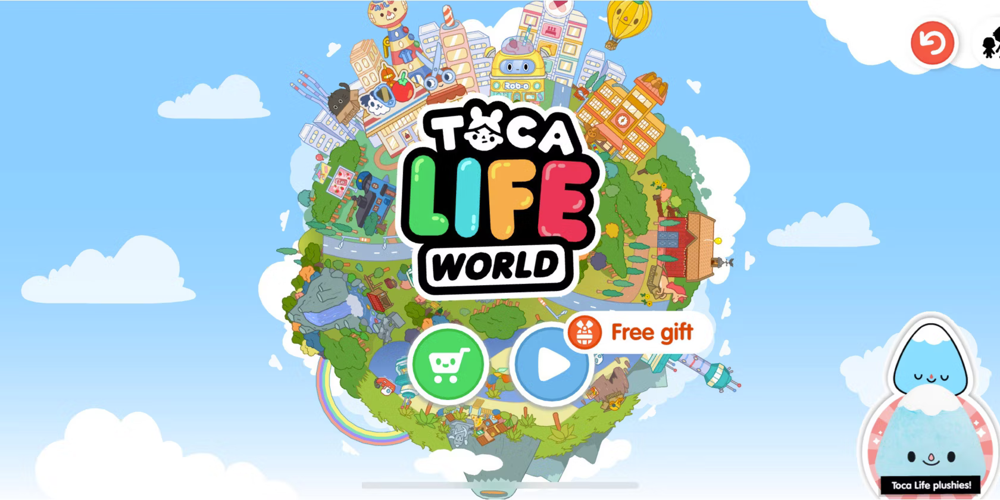

In the realm of educational games, Toca Boca World stands out as a revolutionary app that allows children and adults alike to create their own stories and adventures. But what if you could enhance this experience even further? Enter the Toca Boca World MOD, a modified version that offers additional features and content to make your virtual world even more exciting.
Toca Boca World MOD is a modified version of the original Toca Boca World app, designed to unlock all in-app purchases, including exclusive items, characters, and locations. This version gives players access to everything Toca Boca World has to offer without spending any real money.
In the original Toca Boca World, players need to purchase different locations such as Bop City, the Office, and the Mall. With the MOD version, all these locations are unlocked from the start, allowing you to explore and play in any setting you wish.
The game boasts a wide range of characters, each with unique personalities and appearances. The MOD version unlocks all characters, giving you more options to populate your world and create diverse stories.
One of the most attractive features of Toca Boca World MOD is the ability to shop for free. Whether you want to buy furniture, clothes, or accessories, you can do so without worrying about in-game currency.
Toca Boca World is known for its highly customizable environments. The MOD version enhances this by providing access to exclusive items and decorations, enabling you to personalize your world to your heart’s content.
Ads can interrupt the immersive experience of gameplay. Toca Boca World MOD removes all ads, ensuring uninterrupted playtime.
Before you can install the MOD version, you’ll need to enable the installation of apps from unknown sources in your device settings.
Visit a reliable source to download the Toca Boca World MOD APK file. Ensure that the website is secure to avoid downloading malware.
Once the download is complete, open the APK file and follow the on-screen instructions to install the game.
After installation, open Toca Boca World MOD and start exploring the expanded world with all its unlocked features.
The MOD version of Toca Boca World significantly enhances the gameplay experience by providing access to all the content without the need for in-app purchases. This makes it more enjoyable for players who want to explore all aspects of the game.
Toca Boca World MOD is regularly updated to ensure it remains safe and secure for users. Always download the MOD from reputable sources to avoid security risks.
If you or your child loves storytelling and creative play, Toca Boca World MOD is the perfect game. The additional content allows for endless possibilities in creating unique stories and adventures.
While the original version of Toca Boca World offers a vast amount of content, much of it is locked behind paywalls. The MOD version removes these barriers, giving you full access from the start.
The original version requires in-app purchases to unlock certain features, whereas the MOD version provides everything for free, making it a cost-effective option.
The MOD version eliminates ads, allowing for a smoother and more enjoyable gaming experience compared to the original version.
Downloading MOD APK files from untrusted sources can expose your device to malware and other security threats. Always use reputable websites for downloads.
Using MOD versions of apps can sometimes lead to account bans, especially in games with online multiplayer features. Toca Boca World MOD is primarily a single-player game, but it’s essential to be aware of this risk.
MOD versions may not receive updates as quickly as the official app, potentially leading to compatibility issues with newer versions of the game.
Ensure that you download the MOD APK from a trusted website to minimize the risk of malware or viruses.
Before installing a MOD version, back up your original game data. This allows you to revert to the official version if needed.
Regularly check for updates to the MOD version to ensure compatibility with the latest version of Toca Boca World.
Toca Boca World MOD offers an enhanced gaming experience by unlocking all the features and content without the need for in-app purchases. It's a fantastic option for players who want to explore every corner of Toca Boca World without limitations.
However, it's crucial to download the MOD version from reliable sources and be aware of the potential risks associated with using modified apps. With the right precautions, Toca Boca World MOD can provide endless hours of creative fun.
Yes, as long as you download it from a trusted source, Toca Boca World MOD is safe to use.
Updates may not be available as frequently for the MOD version. Check the website where you downloaded the MOD for updates.
While Toca Boca World is primarily a single-player game, using MOD versions can sometimes lead to account bans in other games. Be aware of this risk.
Enable unknown sources on your device, download the APK file from a trusted source, and install it.
The MOD version unlocks all locations, characters, and items, and removes ads for an enhanced gaming experience.